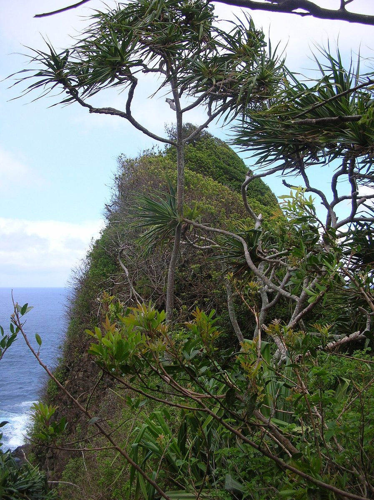
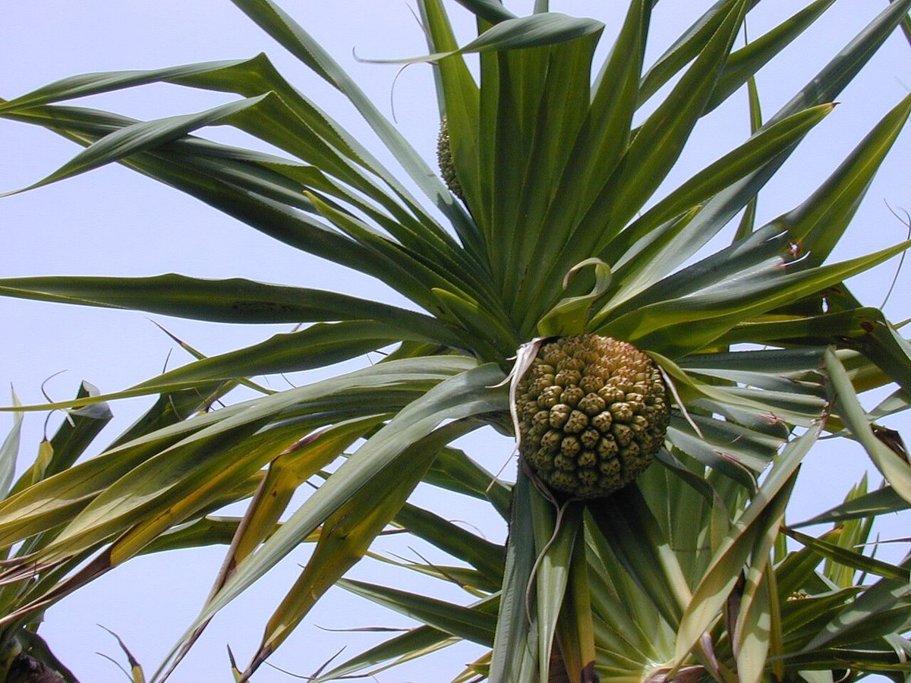
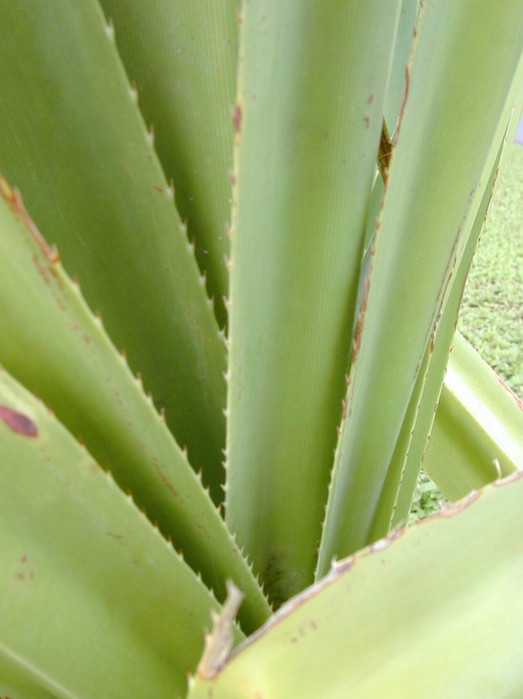

COMMON Beach strand Valley mouth Sea cliff
Pandanus tectorius
hala, pū hala · screwpine, tectorius screwpine



Quick facts
| Family | Pandanaceae |
|---|---|
| Scientific name | Pandanus tectorius |
| Hawaiian name(s) | hala, pū hala |
| English name(s) | screwpine, tectorius screwpine |
| Status | Indigenous (native, non-endemic) |
| Conservation | — |
| Coastal zones | Beach strand Valley mouth Sea cliff |
| Occurrence | Conspicuous at every Nā Pali valley mouth and back-beach, forming distinctive prop-rooted stands at Kalalau, Honopū, Nuʻalolo Kai, and Miloliʻi; also on drier sea cliff slopes. |
Hazards: Leaf-margin and midrib spines are sharp and recurved; do not push through hala thickets without long sleeves.
Uncertainty: Hala's history in Hawaiʻi is best read as *both/and*, not either/or. Wagner, Herbst & Sohmer treat *Pandanus tectorius* as indigenous to Hawaiʻi — present before Polynesian settlement via natural ocean dispersal of its buoyant fibrous fruit keys, consistent with its pantropical distribution [16]. Gallaher and colleagues provide direct evidence for that natural-dispersal history: macrofossil *Pandanus* fruit recovered from Kauaʻi is dated to ~1.2 Ma, well before human arrival in the archipelago [18]. Gallaher's own ethnobotanical review of hala in Hawaiʻi [30] complements this by documenting that Polynesian voyagers subsequently introduced additional cultivated varieties, expanding the plant's diversity and cultural presence in Hawaiʻi (see also Krauss on lauhala/hīnano cultivars [11]). This guide therefore treats hala as *indigenous via natural long-distance dispersal, and additionally enriched by Polynesian-introduced cultivars*. Earlier framings of a clean "Wagner-indigenous vs. Gallaher-Polynesian-introduction" dispute mis-read Gallaher's argument. Either way, hala's cultural place in Hawaiʻi is uncontested.
How to identify
- Growth form
- A small-to-medium branching tree, 4–14 m tall, held up by numerous stilt-like prop roots that fan out from the base and lower trunk.
- Size
- 4–14 m tall with a crown spread often 3–5 m.
- Leaves
- Long, strap-shaped, arranged in three rows spiraling up the branch tips into large tufted crowns. Blades 1–2 m long, 5–10 cm wide, with sharp recurved spines along the margins and the underside midrib.
- Flowers
- Dioecious. Male flowers are dense, cream-coloured, short-lived, fragrant plumes (hīnano); female heads develop directly into the fruit.
- Fruit / seed
- A large pineapple-like syncarp 15–25 cm across composed of many wedge- shaped woody-fibrous drupes ("keys"), ripening from green to orange or red. Each key floats and disperses on ocean currents.
- Bark / stem
- Trunk pale grey with ring-scars from fallen leaves; supported by conspicuous prop roots.
- Where it sits on the coast
- Back-beach, valley mouths, lower sea cliffs, and along freshwater streams within a kilometre of the coast.
Clinchers (features that lock the ID)
- Conspicuous prop roots supporting the trunk — no other coastal tree in Hawaiʻi does this.
- Long strap leaves with spines along both margins and the underside midrib.
- Big pineapple-like woody fruit that breaks into wedge-shaped keys.
- Leaves spiral in three vertical ranks up the branch tip.
Look-alikes
- Cocos nucifera (coconut palm, niu) — Also a coastal tree with a crown of long leaves, but has a single unbranched trunk, no prop roots, and pinnate (feather) leaves rather than strap leaves.
- Cordyline fruticosa (kī, ti plant) — Much smaller (understorey shrub 1–3 m), soft entire leaf margins without spines, no prop roots.
Ecology
A keystone species of Hawaiian coastal forest — its buoyant, long-lived fruit keys allow ocean dispersal, its prop-root architecture withstands storm surge and wind, and its crowns shelter native land snails and birds. Dense hala forest at valley mouths is one of the few Nā Pali vegetation types that resembles pre-contact structure. [1], [2], [3], [10], [11], [16], [18], [30]
Cultural significance
Hala is central to Hawaiian material culture — lauhala (leaves) are woven into mats, hats, and sails, and hīnano (male flower) is celebrated in mele and hula. This guide names those relationships without giving harvest instructions; that transmission belongs to Hawaiian practitioners.